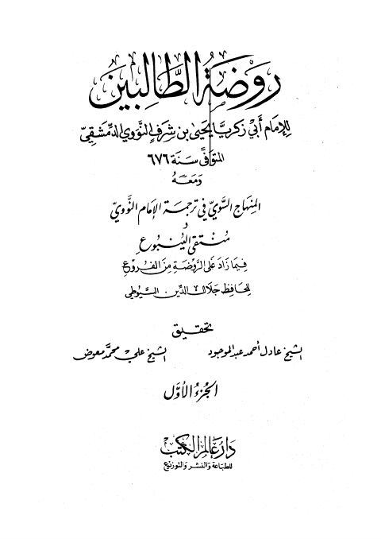

Downloads need an internet connection.
روضة الطالبي للنووي ومعه المنهاج السوي في ترجمة الإمام النووي
Authors: يحيى بن شرف النووي
Editors: عادل أحمد عبد الموجود علي محمد معوض
Publishers: دار عالم الكتب للطباعة والنشر والتوزيع
**▫️ العنوان: روضة الطالبي للنووي ومعه المنهاج السوي في ترجمة الإمام النووي** ▪️ المؤلف: #يحيى_بن_شرف_النووي ▫️ المحقق: #عادل_أحمد_عبد_الموجود • #علي_محمد_معوض ▪️ الناشر: #دار_عالم_الكتب ▫️ تاريخ النشر: 1423هـ 2003م ▪️ بلد النشر: الرياض، #السعودية ▫️ الطبعة: 1 ▪️ عدد الأجزاء: ج1 ▫️ الصفحات: 53 ▪️ نوع الوعاء: #كتاب ▫️ التصنيف الرئيسي: #التراجم_والأعلام ۪